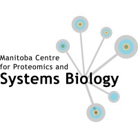

Peptide Chromatography & Proteomics
Manitoba Centre for Proteomics and Systems Biology · Department of Internal Medicine · University of Manitoba
The Krokhin Lab specializes in the chromatographic separations of peptides, with primary applications in proteomics. Our work includes high- and low-pH reversed-phase (RP) chromatography, Strong Anion Exchange (SAX), and hydrophilic interaction liquid chromatography (HILIC).
We develop predictive models for peptide retention time and hydrophobicity that enable more accurate and efficient proteomics workflows. Our software tools are freely available and designed to integrate seamlessly into existing mass spectrometry pipelines.
Principal Investigator ·
Associate Professor, Max Rady College of Medicine
Adjunct Professor, Chemistry & Biochemistry and Medical Genetics
Dr. Krokhin is an analytical chemist with over 35 years of experience. His laboratory is a world leader in peptide chromatography and its proteomic applications, with contributions spanning SARS, COVID-19, Ebola, biofuel-producing bacteria, and human disease biomarker discovery.
Master's Student · Manitoba Centre for Proteomics and Systems Biology
Alexandre's research focuses on peptide hydrophobicity prediction and chromatographic retention modelling, including the development of CHIPs — a simple, empirically fitted alternative to the GRAVY score for estimating peptide behaviour under reversed-phase HPLC conditions.
Chromatographic Hydrophobicity Index for Peptides. Predicts peptide hydrophobicity under reversed-phase HPLC conditions using an additive model with logarithmic length correction. Available as a command-line tool and an interactive web application.
FA TFA Publication in preparationAdditional software for peptide retention time prediction and chromatographic method development will be released here as publications are submitted.
In development
Dr. Oleg V. Krokhin
Manitoba Centre for Proteomics and Systems Biology
Room 799, John Buhler Research Centre
715 McDermot Avenue, Winnipeg, MB R3E 3P4
Phone: 204-789-3283
Email: oleg.krokhin@umanitoba.ca